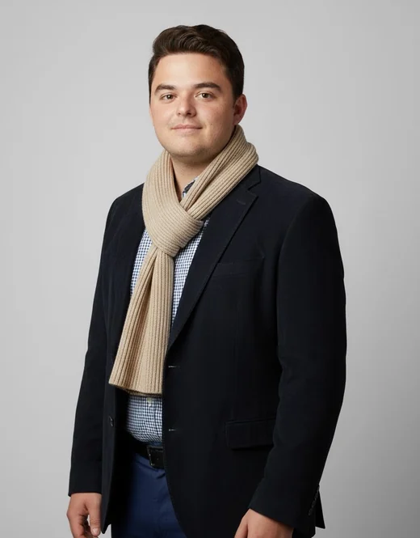

Perfil profesional
Estudio BTS SIO en AFTEC Vannes y me interesan especialmente los sistemas, las redes, el despliegue automatizado y la resolución práctica de incidencias.
- Edad: 25 años
- Ubicación: Vannes y Morbihan
- Movilidad: permiso B, vehículo propio
- Modalidad: presencial o remoto según el contexto
